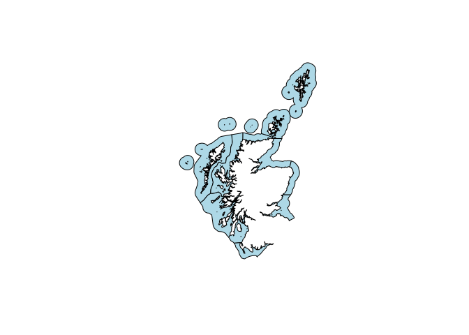
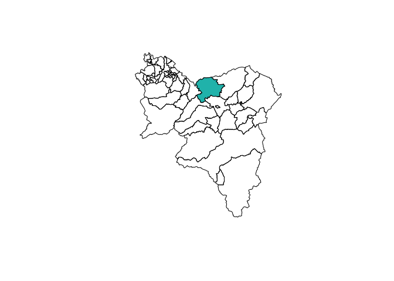

Overview
An R package providing access to spatial map layers for Scotland. All layers have an open data licence. This package is a fork of the Province of British Columbia bcmaps package.
Features
Download, cache and map spatial layers of Scotland, such as administrative boundaries, natural resource management boundaries etc. All layers use the Open Government Licence and made available in the 27700 projection, which is the Scottish Government standard.
Layers are assessed directly from the spatialdata.gov.scot catalogue. See each layer’s individual help file for more detail.
Installation
To install the development version of the scotmaps package, you need to install the devtools package then the scotmaps package.
install.packages("devtools")
devtools::install_github("fozy81/scotmaps")Usage
To view all the layers that are available, run the available_layers() function:
# A tibble: 5 × 2
layer_name title
* <chr> <chr>
1 community_councils Scottish Community Council Boundaries
2 local_authorities Scottish Local Authorities Boundaries
3 marine_areas Scottish Marine Area
4 data_zone_2011 Data Zone Boundaries 2011
5 water_monitoring_sites Water monitoring sites
------------------------
All layers are downloaded from the internet and cached
on your hard drive at ~/.local/share/scotmaps.Download layers by using a shortcut function by the same name as the layer_name for instance marine_areas(). The first time you run a layer function, you will be prompted for permission to download that layer to your hard drive. Subsequently, that layer is stored locally for quick access. For example:
ma <- marine_areas()
plot(st_geometry(ma), col = "lightblue")
Simple Features objects
All layers are returned as sf spatial objects:
# Load and plot the community councils in South Lanarkshire
cc <- community_councils()
sl <- cc[cc$local_authority == "South Lanarkshire", ]
plot(st_geometry(sl))
# Next, extract and plot the Carluke community council area
carluke <- cc[cc$cc_name == "Carluke", ]
plot(st_geometry(carluke), col = "lightseagreen", add = TRUE)
Respect My Local Authority
A handy layer for creating maps for display is the local_authorities layer, accessible with the function by the same name. This example also illustrates using the popular ggplot2 package to plot maps in R using geom_sf:
library(ggplot2)
ggplot() +
geom_sf(data = local_authorities(), mapping = aes(fill = local_authority)) +
scale_fill_viridis_d(name = "local_authority") +
theme_minimal()
Updating layers
When you first call a layer function scotmaps will remind you when that layer was last updated in your cache with a message. For a number of reasons, it might be necessary to get a fresh layer in your scotmaps cache. The easiest way to update is to use the force argument:
cc <- community_councils(force = TRUE)Another option is to actively manage your cache by deleting the old layer and calling the function again:
delete_cache('community_councils')
cc <- community_councils()Vignettes
After installing the package you can view vignettes by typing browseVignettes("scotmaps") in your R session.
Utility Functions
The package also contains a couple of handy utility functions:
-
fix_geo_problems()for fixing invalid topologies insforSpatialobjects such as orphaned holes and self-intersections -
self_union()Union aSpatialPolygons*object with itself to remove overlaps, while retaining attributes
Getting Help or Reporting an Issue
To report bugs/issues/feature requests, please file an issue.
How to Contribute
Pull requests of new scotmaps layers are welcome. If you would like to contribute to the package, please see our CONTRIBUTING guidelines.
Please note that this project is released with a Contributor Code of Conduct. By participating in this project you agree to abide by its terms.
Source Data
The source datasets used in this package come from various sources under open licences, including spatialdata.gov.scot. See the data-raw folder for details on each source dataset.
Licence
# Modifications copyright (C) 2020 Tim Foster
# Copyright 2017 Province of British Columbia
#
# Licensed under the Apache License, Version 2.0 (the "License");
# you may not use this file except in compliance with the License.
# You may obtain a copy of the License at
#
# http://www.apache.org/licenses/LICENSE-2.0
#
# Unless required by applicable law or agreed to in writing, software distributed under the License is distributed on an "AS IS" BASIS,
# WITHOUT WARRANTIES OR CONDITIONS OF ANY KIND, either express or implied.
# See the License for the specific language governing permissions and limitations under the License.